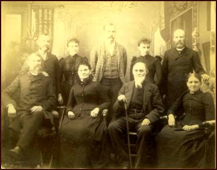

|
|
|||||||||
|
|
A TRIP TO CALIFORNIA We are indebted to Ann Hagler, a Ferguson descendant, for sending us this priceless narrative and the photos of the Ferguson family.
 Front row, left to right: John N. Ferguson; Mary C. Cooprider Ferguson; William Washington Ferguson; Elizabeth Susan Ferguson HaglerBack row, left to right: Paris J. Ferguson; Martha Jane "Mattie" Ferguson Watson; William Washington Ferguson Jr; Mary Isodora "Dora" Ferguson Menefee; Henry O. Ferguson After selling his farm in Jasper County, Iowa, he made the start by moving to Oskaloosa in Mehaska County, Iowa in the month of April, 1849, where he made ready for the journey to California. The outfit consisted of two wagons, five yoke of oxen and two cows (which were yoked and worked as oxen) and one riding horse. After procuring these articles as carriers and adding the store of provisions and clothing necessary to sustain life while making the long journey: Then on the fourth of May, 1849, they continued the journey to Kanesville (known now as Council Bluff), a point on the Missouri river opposite the present city of Omaha. After crossing the Missouri river at this point, we joined a company of forty wagons, who had come together forming a company of forty-two wagons, named the Iowa company, though made up of people from many of the western States. This company numbering about three hundred souls, men, women and children; about two hundred and fifty cattle and horses, this constituted a vast number of beings all determined in purpose yet seemingly almost making a leap in the dark, none having any personal knowledge of what lay before them, yet with boldness and determination the proceeded to organize by electing as captain, J. S. Kirkpatrick, a very prominent man- by profession a minister of the Gospel- a man of strong resolutions, commanding in appearance, being very large in statue. These qualifications made him a No 1 officer. After completing the organization by electing captains of the guard and Company, which was necessary to our safety, as will be seen as we proceed on our journey. Most every family had procured a small Mormon guide book which mapped out almost the entire route to the present city of Salt Lake, giving instructions where the best water and grass for cattle, wood etc. could be found. Thus organized and equipped, all in readiness-like the Israelites of old- the command was given to set forward, and, this vast army began this wonderful journey. Our company was made up of young Vigorous men and women, full of determination, up early, and onward, making the first hundred miles in a very short time, enjoying new scenes on every side, nothing to hinder, but alas; -hidden danger was just ahead. The country for many miles was inhabited by hostile Indians. A tribe known as the Pawnee Indians. We found them in great numbers, and while they seemed friendly, no doubt they were planning our downfall. We formed a coral by running our wagons in a circle, running the tongue of one wagon under the hind axel of another, thus making a large corral in which to keep the cattle, leaving a large entrance gate way which was made safe by a string of heavy log chains drawn across from wagon to wagon; this, with the watchful eye of our faithful guard, kept them safely until this occasion- when all was quiet- tired people and tired cattle all was repose, guards vigilant and careful, little thinking that these red devils were stealthily planning to stampede our cattle- perhaps wrapped in buffalo skins and coming up on all fours like a bear- anyway they succeeded in sending them like a roaring thunder, pel mel, over the chain away they went, Guards in pursuit on horseback soon succeeded in returning them to our corral without the loss of one; but Indian like, the night being very dark, they only kept away until all was still again, when a second attempt was made, but our faithful guard, assisted by others of the company, soon returned them to their quiet again. At this time all was wide awake, so they determined to yoke the cattle, thus hoping to manage them should they make another attempt. All was quiet again only for a short time, when the third time, being awfully frightened, they went with greater speed than ever. This time they succeeded in taking seven yoke of the best cattle, (one yoke being ours), these they drove up the Platte River for several miles, then rounding them up into a huddle they shot them dead. Our men following them the next morning by track found them as stated, all dead, and the Indians closely guarding them, their guns showing over the river banks, ready to shoot in case we attempted to take the nice fat meat of our cattle. So thus came our first sadness, and many of the young men of our company begged to go and take some of the meat and put strychnine in the carcasses, and thus get revenge, but the council of our worthy captain, Kirkpatrick, who made a warm speech, seconded by my father W W Ferguson, and many others of more mature minds exhorting the younger men, saying our revenge thus taken would so savage those blood thirsty savages that they would massacre all perhaps of the thousands of immigrants who were yet behind us. Counciling them to hitch up their teams and get out of their territory as speedily as possible. This we did, and soon we were again on our journey. Cattle fresh, made good time, and the now scenes came so fast that we soon forgot the Indian troubles and looked forward with fond anticipation of the success for the future, and certainly enjoyment reigned for many long days. We had beautiful camping places, abounding with plenty of green feed and water for our stock. Sometimes we would camp for several days at one place. The women would do their washing and the men would fish and hunt until Sunday came, and then we would be entertained by a sermon from out Rev Captain Kirkpatrick. All this was pleasant, but little did we realize that ever golden moment was so valuable, when the great distance ahead of us was considered. Thus matters went on, nothing to mar or disturb, until all at once, without warning, we were attacked by an awful scourge of cholera, which came upon us so fatal. The first one, a lady was taken in the afternoon and was dead before morning. Many others were stricken, but though the skill of our Dr Wells (our company Physician) who had supplied himself with medicine which he gave the suffering one and to others as a preventative. Ordering us to move on, as he was sure the atmosphere was full of this awful disease; advising the company to divide into four companies of ten wagons each. Thus avoiding the damage to all if another cholera siege came to us. Thus we continued up the great Platte River for hundreds of miles, over a vast prairie country, the home of thousands of buffalo, and many herds of antelope. Giving us plenty of nice fresh meat. I remember a very interesting incident occurred one day while our captain as usual was mounted on his favorite gray horse riffle across the saddle in front of him, he saw a great monster buffalo alone; So our valiant captain thought to capture him. He made this advance coming near him (as they were very gentle) , when in shooting distance he dismounted and advanced a few steps towards him, then taking careful aim he fired. The monster fell, so thinking him dead, he rushed upon him without reloading his riffle, knife in hand, intending to cut his throat, when lo and behold the monster was only stunned. Up he came making a bee line for the captain, who made a hasty race for his horse, grabbing his gun he mounted as the infuriated animal was nearing him. He reloaded, and with steady aim he sent the bullet that finished him. So our captain came out conquerer of the goliath of his herd. Many other interesting incidents occurred while crossing this prairie country. About three different times our entire teams attached to the wagons, seemingly without any apparent cause, stampeded, running on the level road until they were exhausted, then slowing down to their usual gate. These stampedes happened before our train divided when our teams were strong and fresh. Our road continued for hundreds of miles up the north divide of the great Platte Rivewr, at length coming to north Platte River, here we crossed to Fort Laramie, thense following the old Morman road on through the Black Hills towards Fort Hall, passing out of Black Hills through Devils Gate, or Independence Rock as it is called, and as emigrants if making good time, should be here on the 4th of July, but we are now nearing the end of August, and are beginning to be alarmed at our slow travel. We pass the Devils Gate, the walls of which are 250 feet high, and stand almost perpendicular. Just wide enough to let Sweet Water River pass through. We now enter the Rocky Mountains. Traveling up Sweet Water River, we came to Pacific Springs. Here we gained our first knowledge that we had passed the summit of the Rock Mountains. Here the water divided, half running east into the waters of Missouri River, and half running west toward the Pacific Ocean, thus the name Pacific is given to the springs. We find strange phenomen here. In a small piece of boggy flat land or men found that by digging a spade deep they came to a solid sheet of ice extending over this vast flat. Well do I remember seeing the big square pieces of nice clear ice they dug out of this black mud, and seemingly no one can account for its being there. Thus we move on a few days coming into a dry sandy country, crossing a small river called Big Sandy. Here we again encountered the awful Asiatic Cholera, loosing one of our men, and another train nearly lost many. Yet through a kind providence we were all spared, the original nine, Father, Mother and seven children have escaped any sickness so far. We now proceed to cross the Green River Desert, a vast bed of deep, dry sand, taking water to drink and cook with, we travel day and night, finally coming to Green River, where our almost famished cattle get their first drink for almost thirty hours. Here we found some men had constructed a ferry for wagons, but cattle and horses had to swim. Green River was very deep and narrow. Thus the journey was continued without much of importance to record until we reached the Humbolt River. Here we find a beautiful country and feed was fairly good and we followed this river for many days. Father caught many of those beautiful lake trout, some weighing six or eight pounds. They were certainly fine eating and much relished by us, one and all, as our only meat for months had been old bacon. We now leave the Humbolt River, about eighty miles above the sink, taking a north west course through a sage brush country on the Lawson Cut Off (so called) to the foot of the Sierra Nevada Mountains, passing through One Thousand Spring Valley winding our way over the summit, out by Goose Lake, and on to head waters of Pitt River. Then traveling for days down Pitt River, we found the country inhabited by a dangerous tribe of Indians. One wagon crowded ahead of us about a days journey, and Indians came upon them and shot with arrows from ambush, killing Mr Reaves, but did not molest any other member of the family. Our journey continues down Pitt River, turning to our left into what is now Lassen County, California near the present site of Susanville, coming onto the head waters of Feather River. On this particular occasion we struck camp very early, finding good feed and scouring plenty of fish in the river, and small game plentiful, brother john and I took our little riffles and went hunting down the river from the camp. Where all at once we came upon a fresh camp where some wagons had stopped a day or so ago, and there near their camp were at least a dozen bodies freshly scalped by Indians. The blood was hardly dry on them. They had piled them one on the other. They were almost a foot high. Now if you imagined we sat down and examined them carefully and counted them you are away off. We ran to camp, gave the alarm and in short time we were up and going, until late in the evening, as we found we were in the vicinity of a dangerous tribe of Indians and that they were very treacherous. Thus we continued our journey, working our way along the south west slope of the Sierra Nevada Mountains toward the great Sacramento Valley. At this time our company had dwindled down to two families. The Fergusons and a Mr Alford and family. We are now within about fifty miles of the settlements on the Sacramento River, near Red bluff. Our journey was now through a heavy pine timber country. About Nov 1st, having been almost seven months on the journey, our teams were tired, poor and jaded, and the family worn and discouraged, and the elements seemed to add to the gloom of our situation, sun on this day refusing to shine, making it more lonely and the moaning of the winds in the pines seemed to sing a dirge to our gloom. Thus we continued on our journey, not making our camping place until; near nine o’clock in the evening, when we reached what was known as Bruff’s Camp. Our friend Alfords team traveled faster than ours and they came to the camp earlier, having picked the camping place, selecting a site for our tent. Seeing the camp lights seemed to cheer us, and Father yelled like a western Indian, as an expression of our pleasure at nearing the camp, which was answered by our friends, the Alfords, who on the days journey had killed three deer, and when we arrived the had cooked for us a nice venison supper which we much enjoyed. Thinking that our long journey was almost completed, teams cared for, and supper over, tents set up, beds made, we were soon wrapped in sound sleep, and not dreaming what was to happen to us in a few short hours. About midnight in gloomy darkness, the storm broke upon us, winds, like a hurricane, twisting the trees in its fury, breaking the great black oak tree near the ground, under which our tents and also the tents of our friend Alford were stretched. The body of the tree falling across our tent, in which was four children and the top of the tree falling on the Alford tent, killing the old man and his oldest son instantly, and fatally injuring the younger son and their hired man a Mr Cameron, who both died the next day. Our tent was located between the Alford tent and the root of the tree, being stretched over a deep depression in the ground caused by the uprooting of a tree which had disappeared leaving a sink in the ground, which we chose because of so many dry leaves which made a soft place for our bed. In falling the tree broke about thirty feet from the brake at the ground, there being a bend in the body of the tree over our tent, thus the slope of the ground and the tree helped shield us from instant death, but the great concussion and tent poles left three of our children badly hurt but none fatally so, but no one can imagine a darker scene than came upon us. There was left of the Alfords, the old mother and two grown daughters, who were almost frantic, wailing and mourning. The most heart rendering sight. Bereft in a moment of all their male help. Father, brothers and sweet-heart of one of the daughters. Bruff’s Camp was near us, where they were working a number of men in the timber, making shingles and shakes, and hewed timber. The company seemed to have their own physician, who came to our assistance at once. The men laying out the bodies of the dead on the log of the fatal tree. During the remainder of the night a heavy snow fell, making a white winding sheet that covered the dead bodies to a depth of six or eight inches, thus adding sadness to the awful scene. While the men from the Bruff Camp assisted Father, who was laying out the dead, the doctor was caring for the wounded, thus this awful tragedy left us in a helpless condition. Snow on the ground covering all feed for our cattle, of which several died from hunger and fatigue. At a proper time, the four men were wrapped in blankets and all laid side by side in one wide deep grave, which was dug near the root of the fallen tree, Thus we left them for their long sleep. Our oldest sister, being internally hurt, could not be moved for several days. Finally we moved on six or eight miles down to a place called Steep Hollow below the snow belt. Left one wagon here, and during the night more of the cattle died, but providence seemed to come to our aid. In as much as a man who had left a wagon at this place came with two yoke of strong oxen. He proposed to Father to put some of his belongings and his family into his empty wagon and take them to the settlement in the valley. We unloaded one wagon into his, leaving the empty. Thus father took five of family, clothing and bedding with the mans wagon and went to the Settlements. Leaving brother John and I to remain two weeks with our wagon and tent. Our living was very scant, having really nothing to eat only what we could kill with our little guns. We were almost afraid to venture away from our camp, as the country was infested by large grizzly bear, and we could see their tracks around our wagon, in which we slept, every morning. Some of our sad experiences while us boys were left to care for wagons; We were compelled to eat wood-peckers, so we thought a soup made of their broth would be fine. We cooked them and made a search in the wagon for something to thicken the soup, and all we could find was perhaps half pound of dried peaches, so boy like, we cooked them in the broth, and proceeded to eat, but in a very short time two boys were as sick as they could possibly be made, throwing up all that was in them, and suffering awfully. So being pressed by hunger, we determined to make another desperate effort to get some better meat. H O took a gun loaded with buck shot, he was to shoot he deer on the run, while J N had the riffle and would shoot them standing. Thus armed we ventured a mile or so from camp, coming to a chaparall thicket we separated one going each side of the thicket, and a fine doe jumped out on H O’s side, and he, boy like, never thought of the gun, but yelled to J N, “oh John run here and see this beautiful deer.” We went on in the direction she went, J N scolding me because I did not shoot her on the run, and all at once we came upon a drove of deer, and j N succeeded in shooting one. After it had fallen he ran up, knife in hand, to cut its throat and those of the drove were so gentle they would hardly get out of the way of us. Thus we had camp meat. One carried the deer and the other the guns. We proceeded to camp tired and hungry. We took the liver and cooked same on the old camp stove lid, and when half done, we began to eat like hungry wolves, soon filling ourselves to the chin. When to our astonishment the same old sickness we had experienced when eating the wood-pecker soup , and thus the elen and thirteen year old boys were made to suffer alone; but the night soon came, and we being tired was soon wrapped in the quiet slumber which belongs to boy life, and knew nothing of happenings until the new day came bringing to us renewed energy and a new sense of hunger, which we soon satisfied by a fine meal from the loin of our venison. The deer found in these mountains were very small, but by eating sparingly and saving our supply, it lasted us for three or four days. In the mean time the swollen streams between us and our family, caused by the extreme heavy rains, had now fallen so that father could reach us on horse back. So after two long lonely weeks had passed, he came to us bringing a loaf of bread about eight inches wide and twelve inches long and two and one half inches thick, which our dear mother had made from flour which was manufactured in Chili, which was old, lumpy and wormy, for which Father paid one dollar and fifty cents per pound, (did not purchase many pounds) but with all its faults, it seemed to us the most precious morsel of the bread kind we had ever tasted. Thus our first relief came, but Father informed us we would have to remain another week, as he could not, owing to the deep muddy roads, move a wagon. So thus supplied with this small ration of bread, a small slice once a day, with the wild meat we succeeded in getting the lonely boys, young but brave, who stayed and watched the wagons, containing all our earthly belongings until the end of another long week further came again, bringing plenty of teams to take our wagons to the Settlements, which by the way was only twenty-five miles away from us, yet almost impassible because of awful rough mountain roads. The place we wintered was near the great Lassen Ranch in Lassen County. Here we found a gentleman by the name of Mr Denton, who was a great cattle raiser, having almost thousands of head of them scattered up and down the great Sacramento River. He lived in a great adobe house with his family, giving us a chance to occupy a small house near them, and on this ranch he had a large number of Indians and Spanish vaqueros, and in order to feed them he killed a beef each day. So Father was handy with tools, helping Mr Denton in many ways, who in return for his help gave us all the nice beef we wanted to eat. Which was most of our living during the first three months of our California life. We used the lean meat for bread and fat for meat, and with the help of the large quantity of acorns which the Indians had crushed for their own use, who divided with us, we manage to keep soul and body together for the first California winter. Father soon found plenty of work in the timber camps, where companies were engaged in getting large foundation timbers, hewing and splitting same, as there were no saw mills in the State at this time. So father being an expert hewer earned his $16.00 per day and board. He soon made enough to give us flour enough to thicken soup, and for biscuits Sunday morning. And early in the spring Father managed to get us moved down to Yuba City, where we lived for the first year, 1851. We moved to Marysville, where Father engaged in keeping a boarding house. His sign was “Live and Let Live”: he was not very well so us boys, John N, Henry O and P. J, who was six years old, peddled candy in those big gambling houses, at which occupation we made more clear money, selling candy to the miner, who came down from the mining camps by the hundreds, spending their money like dirt. The gold then was so plentiful and they were foolish enough to think there would be no end to it, so candy was a great luxury to them, and sold at enormous prices. We cleared one hundred percent on every stick we sold. Thus matters went with the Fergusons until the year 1852 when we moved to the mining country in the foothills of the Sierra Nevada Mountains in Yuba County. There we engaged in mining and keeping boarders. During our stay, Mary Isadora Ferguson was born, 1853, and W W Jr, 1855. So five of the seven who crossed the plains are still living. Their ages this year 1917, JH 82, HO 80, ES Hagler-77, PJ-73, M J Watson-71. The combined age of the seven Fergusons yet living is 510 years. WW Ferguson and family came to Sonoma County in the year 1857, settling in the Alexander valley. This County has been our home since. I have now completed this short sketch of the memories of the plains, noting the most prominent incidents, yet I might have mentioned many minor happenings which would have been interesting and in summing up will say , after due reflection, that nothing but the kind hand of an over ruling providence, invoked by the prayers of a loving, devoted, mother and the grit and determination of a faithful father could have ever accomplished such an almost seemingly impossible undertaking. Just think of the conditions, a family of seven helpless children, eldest thirteen years, father in poor health, equipment scanty, very limited capital to outfit the expedition, knowledge of the route unknown, almost thousands of miles through territory inhabited by tribes of the most savage and blood thirsty Indians. Attacked twice by a scourge of regular Asiatic Cholera, many dying around us, and yet the seven children and the faithful mother and father escaped unharmed; even the deep snows of the Sierras, owing to our lateness of season, began to fall on us, accompanied by howling storms, falling the great tree and hurling its great massive body across our tents in which was quietly sleeping four innocent children, badly hurt but not fatally; At last landing among strangers, almost without money; Flour $1.50 per pound, and yet the ever ruling providence never let us suffer hunger. Our deliverance was almost a miracle, and now I will close this record in my aged shaky writing, dedicating it to the offspring of this family of pioneer Fergusons. H O Ferguson, assisted in memory by J N Ferguson. (Signed H O Ferguson signed Jan 16th, 1920) (Signed J N Ferguson) |